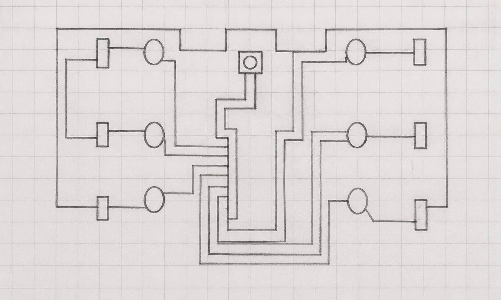
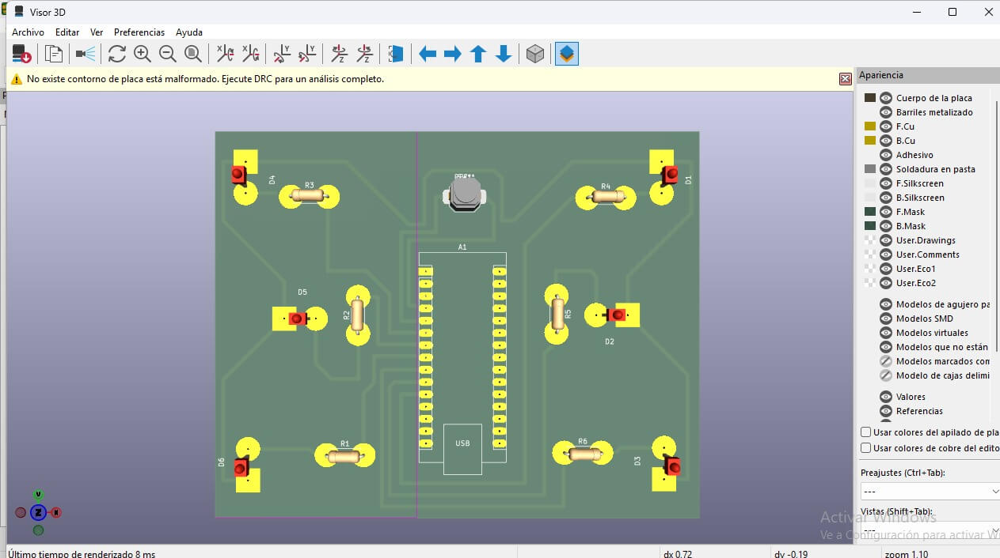
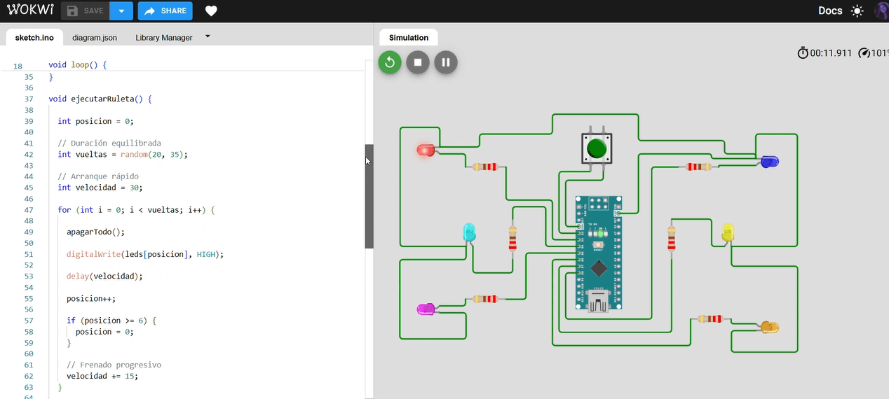
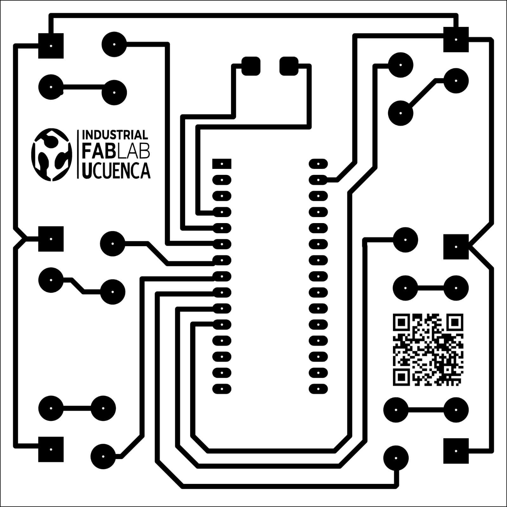
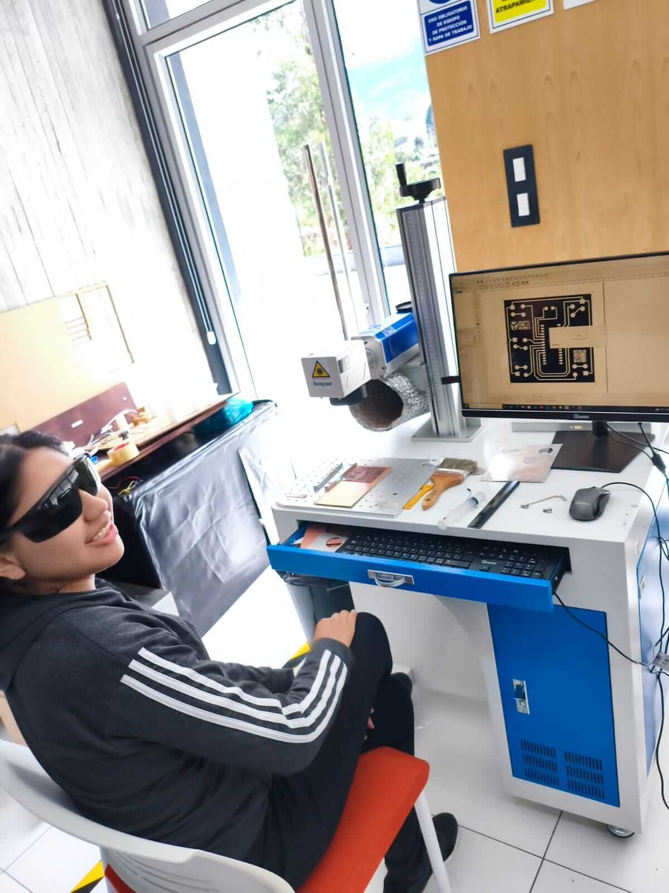
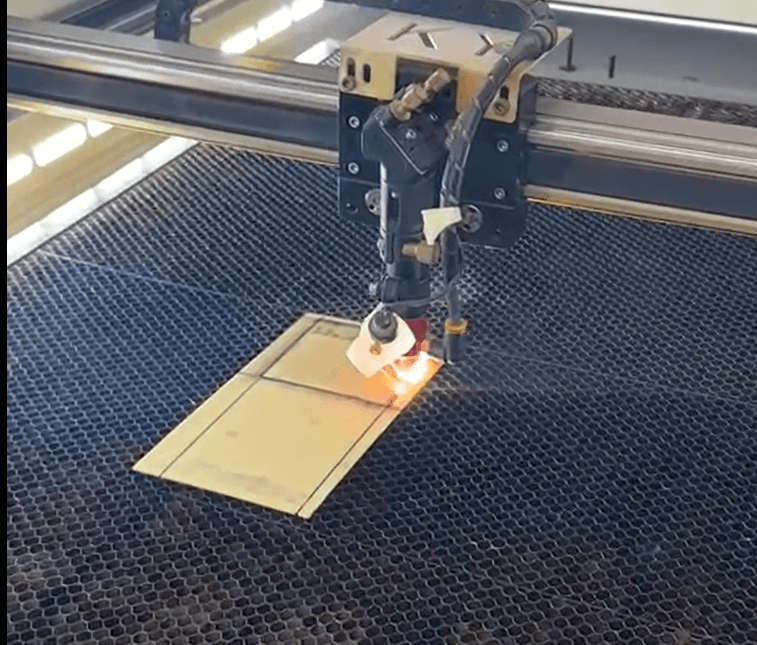
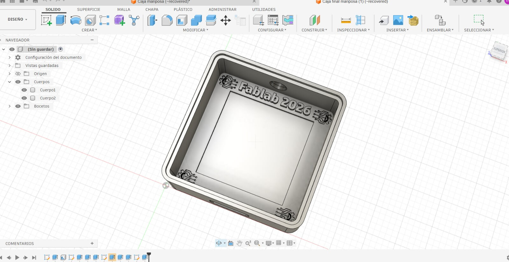

Interactive Butterfly Electronic System
Concept Design, Digital Modeling and Simulation
During this week, we started the development of an electronic project based on Arduino technology. The professor introduced the project requirements and presented the software tools that would be used throughout the development process, including KiCad, Wokwi, and Arduino IDE. After reviewing the project objectives, our team decided to create a butterfly-shaped design that combines creativity, digital fabrication, and electronics.
1. Project Introduction and Software Tools
The project began with an explanation of the objectives and requirements of the assignment. During the class, the professor introduced the software tools that would be used during the development process.
KiCad was presented for electronic circuit and PCB design, Wokwi for virtual simulation and testing, and Arduino IDE for programming and uploading code to the Arduino board.
After understanding the project requirements, we purchased the necessary materials, including an Arduino board, LEDs, resistors, wires, and a copper board that would later be used for manufacturing the electronic circuit.
2. Sketches and Design Selection
After reviewing the project requirements, several sketches were developed to define the appearance and structure of the electronic system.
Instead of reproducing the original example, our team decided to create a butterfly-shaped design. Different alternatives were evaluated before selecting the final geometry and component distribution.
The sketches helped define the location of the LEDs, the dimensions of the wings, and the general appearance of the project before moving to the digital design stage.

3. Digital Modeling
Once the conceptual design was selected, the butterfly was modeled digitally using CAD software. The objective was to transform the initial sketches into a precise digital model.
Several modifications were made during this stage to improve dimensions, symmetry, and the placement of electronic components. The digital model allowed us to visualize the final appearance of the project before fabrication.
4. Arduino Programming and Simulation
After completing the digital design, the programming stage began. The Arduino code was developed to control the LED sequence and create the desired visual behavior for the butterfly design.
The circuit and code were tested using Wokwi before being implemented on the physical hardware. This simulation allowed us to verify the connections, evaluate the programming logic, and identify possible improvements.
The simulation results confirmed the correct operation of both the circuit and the programmed sequence.


Week 6: Manufacturing Process and Fabrication
The process began with the engraving of the copper board using the fiber laser machine, where the circuit design was marked with high precision.
After engraving, drilling was performed to create the necessary holes for electronic components.
5. Copper Board Engraving and Drilling


6. Laser Cutting Process
In the laser cutting machine, the copper board was precisely processed according to the design layout.

6. Protective Box Design, 3D Printing and Acrylic Lid Fabrication
After completing the electronic assembly process, the protective box was designed using Fusion 360 to properly house the copper PCB and all electronic components. The model was carefully developed considering internal space, component positioning, and structural stability for the final prototype.
Once the design was finished, the box was manufactured using a Prusa i3 3D printer, allowing the physical structure to be produced with precision and durability. This ensured that the electronic system could be safely integrated inside the enclosure.
In addition, the lid of the box was designed in AutoCAD and later fabricated using a laser cutting machine with acrylic material. Finally, all components, including the copper board, were assembled inside the structure to complete the final housing of the system.

7. Final Integration and Testing
The final stage of the project integrates all the previous processes, including engraving, drilling, laser cutting, and assembly. All these steps come together in a functional prototype that demonstrates the complete development process. The system was tested to verify its correct operation.
Download Project Files
All project files, including the Fusion 360 model, KiCad PCB design, schematics, and manufacturing resources, are available in the shared cloud folder.